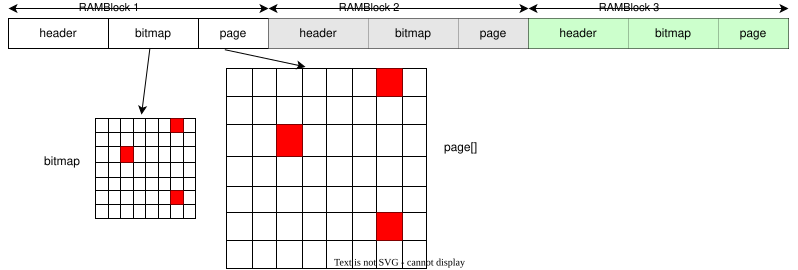

live migration
热迁移简述
热迁移(live migration) 可以在虚拟机正在RUNNING时，对用户透明的从 source host 迁移到dest host.
涉及迁移对象种类
热迁移的流程会大概包含几个对象:
- cpu
- 内存
- 设备
主要工作
而热迁移主要工作是将这几个对象的信息，从原端 copy到目的端，并且 做好sync工作。
由于不停机vm，vcpu还会更改一些对象状态。例如: 内存，可能在迁移完 一个page后，该page由于vcpu还在跑, 有可能又有更改。这时，qemu还需要 track到该page，并完成对该page的再一次的迁移。
如何做到避免在热迁移过程中影响vcpu
迁移线程和vcpu线程是不同线程, 所以热迁移时，qemu进程会新增一个进程。
- 如何评价一个热迁移流程的质量
- downtime: 热迁移过程中，虚拟机暂停的时间
- migration total time: 迁移总时间
- vm performance during migration: 迁移过程中虚拟机运行效率
对象分类
对于热迁移的对象来说，主要分为两类
- 对象传输数据量大(典型内存)
- 对象传输数据量小(典型cpu apic)
为什么要这样分呢?
假设, 在某个环境下, 虚拟机内存为2G , 而网络传输2G的数据需要60s. 而CPU apic的传输数据仅为4096, 传输时间 0.0001s。这两个对象都会在 vm running时频繁改变，但是如果要将内存迁移完全放到虚拟机暂停之后， 在传输。虚拟机内的服务可能没有办法接受，但是对于CPU而言由于数据量 小，vm可能能接受该停机时间。
热迁移还有一些限制条件, e.g.:
- 对存储有一定的限制: 要使用共享存储，例如nbd,nfs
- 两端的CPU类型要一致
- 两端虚拟化相关的software要一致，例如KVM, QEMU, ROM等等.
- 两端vm的machine-type, cpuid要一致。
我们接下来，结合代码流程分析细节.
热迁移主要流程分析
迁移对象注册
上面提到过，迁移过程可能涉及一些对象。qemu定义了 SaveStateEntry数据 结构来描述每一个迁移对象:
1
2
3
4
5
6
7
8
9
10
11
12
13
14
15
16
17
typedef struct SaveStateEntry {
QTAILQ_ENTRY(SaveStateEntry) entry;
char idstr[256];
uint32_t instance_id;
int alias_id;
int version_id;
/* version id read from the stream */
int load_version_id;
int section_id;
/* section id read from the stream */
int load_section_id;
const SaveVMHandlers *ops;
const VMStateDescription *vmsd;
void *opaque;
CompatEntry *compat;
int is_ram;
} SaveStateEntry;
- entry: 用户链接每个迁移对象
- idstr: 唯一标识该对象
- instance_id: 表示设备实例编号
- …id: 先ignore
- ops, vmsd: 下面详细介绍
- opaque: 模块注册时，提供给热迁移过程中用到的结构体
- is_ram: is ram or not ?
上面提到过，对象主要分为两类, 一种是热迁移过程中需要一直sync的。 另一种是可以在虚拟机暂停时，一次传输完成的。
第一种会准备一个SaveVMHandlers, 存放到SaveStateEntry中的ops成员中。 在热迁移的几个阶段来调用。
第二种会准备一个VMStateDescription,存放在SaveStateEntry中的vmsd, 该函数也会有一些回调。(!!!)
两类的注册流程如下, 以内存和apic为例
1
2
3
4
5
6
7
8
9
10
11
12
13
14
15
ram_mig_init
register_savevm_live {
ops = savevm_ram_handlers,
opaque = ram_state
}
apic_common_realize
vmstate_register_with_alias_id {
vmsd = vmstate_apic_common,
opaque = APICCommonState
}
ram_mig_init -- SaveStateEntry(mem) ---+
\
apic_common_realize --SaveStateEntry(apic) -----+---- link to savevm_state.handlers
第一类相关的，我们在下面称为T_ram, 而第二类相关的，我们 称为T_apic
迁移线程
上面提到过，为了避免对vcpu的性能产生影响，qemu创建了一个单独的migration thread 来做热迁移工作。我们来看下相关堆栈:
在qemu monitor 中输入migrate 命令后:
1
2
3
4
5
6
7
8
9
10
11
hmp_migrate
=> qmp_migrate
=> if (channels) addr = channels->value->addr //获取到dest channel addr
//仅分析tcp
=> socket_start_outgoing_migration
=> qio_channel_socket_connect_async
=> socket_outgoing_migration
=> migration_channel_connect
=> migrate_fd_connect
//创建迁移线程
=> qemu_thread_create -- migration_thread
迁移线程migration_thread中调用函数流程如下:
1
2
3
4
5
6
7
8
9
10
11
12
13
14
15
16
17
18
19
20
21
22
23
24
25
26
27
28
29
30
31
32
33
34
35
36
37
38
39
40
41
42
43
44
45
46
47
48
49
50
51
52
53
54
55
56
57
58
59
60
61
62
63
64
65
66
67
68
69
70
71
72
73
74
75
76
migration_thread
# NOTE
#
# 下面的save的意思，就是迁移，将source端的数据copy并存储
# 到目的端
#
# T_ram 和一些公共流程，我们用1,2,3标出
# T_apic 我们用1(t_apic),2(t_apic)...标出
#
=> qemu_savevm_state_header
#
# T_ram: 1.完成迁移前的准备工作
=> qemu_savevm_state_setup
=> for_each(savevm_state.handlers)
=> if (vmsd->early_setup) vmstate_save() continue
=> se->ops->save_setup()
# 2. 热迁移主流程，在里面会进行持续循环，直到状态满足要求
=> foreach(s->state == ms_ACTIVE || ms_POSTCOPY_ACTIVE)
=> migration_iteration_run(简单描述可能执行到的函数)
# 3. 计算本轮还要 copy的数量粗略的
=> qemu_savevm_state_pending_estimate
=> for_each(savevm_state.handlers)
se->ops->state_pending_estimate()
# 4. 将pending_size < s->threshold_size时，需要
# 精细的获取下还要copy的数量
=> if (pending_size < s->threshold_size)
{
=> qemu_savevm_state_pending_exact()
=> for_each(savevm_state.handlers)
se->ops->state_pending_exact()
}
=> # 7. 如果真的达到了s->threshold_size, 则认为可以暂停虚拟机了
# 然后将剩下的信息一次性copy完
migration_completion()
=> migration_completion_precopy
=> migration_stop_vm
=> vm_stop_force_state
=> vm_stop
=> do_vm_stop
=> pause_all_vcpus
=> vm_state_notify
=> bdrv_drain_all
=> bdrv_flush_all
=> qemu_savevm_state_complete_precopy
# 7.1 将剩余的全部save完
=> qemu_savevm_state_complete_precopy_iterable
=> foreach(savevm_state.handlers)
=> se->ops->save_live_complete_precopy()
# 7.2(t_apic)
# 在该流程中，我们将T_apic类型的对象全部迁移完，注意
# 此时，vcpu已经全部pause了。
=> qemu_savevm_state_complete_precopy_non_iterable
=> foreach(savevm_state.handlers)
vmstate_save()
vmstate_save_state_with_err
=> vmstate_save_state_v
=> vmsd->pre_save()
=> !!进行vmsd递归!! OR field->info->put()
=> vmsd->post_save()
# (t_apic)对每一个subsection做savestate
=> vmstate_subsection_save
=> foreach(subsection)
=> vmstate_save_state_with_err
=> OR: migration_completion_postcopy
# 5. 进行实际的数据save
=> qemu_savevm_state_iterate()
=> for_each(savevm_state.handlers)
se->ops->save_live_iterate()
# 6. 会根据带宽, 用户允许的downtime来更新 热迁移过程中的一些条件和限制信息，
# e.g., threshold_size, pages_per_second
=> urgent = migration_rate_limit();
# END. 8. 热迁移结束， cleanup资源
=> migration_iteration_finish
=> switch s->state ... do something
=> migration_bh_schedule(migrate_fd_cleanup_bh,...)
=> migrate_fd_cleanup
该流程比较复杂，我们按照下面的条目进行展开:
- qemu 热迁移传输
- ram::save_setup
qemu 热迁移传输
qemu使用MigrationState表示当前热迁移的状态, 其中
1
2
3
4
5
6
7
struct MigrationState {
...
QEMUFile *to_dst_file;
...
JSONWriter *vmdesc;
...
};
- to_dst_file: src和dst通信文件fd, src write，source read
- vmdesc: qemu发送数据都是json格式, 将所要发送的json信息，存储到vmdesc.
在migration_thread() 首先调用qemu_savevm_state_header()函数, 将迁移数据 的头信息发送出去:
1
2
3
4
5
6
7
8
9
10
11
12
13
14
15
16
17
18
19
20
21
22
23
24
void qemu_savevm_state_header(QEMUFile *f)
{
MigrationState *s = migrate_get_current();
//新创建一个writer
s->vmdesc = json_writer_new(false);
trace_savevm_state_header();
//发送 MAGIC, VERSON
qemu_put_be32(f, QEMU_VM_FILE_MAGIC);
qemu_put_be32(f, QEMU_VM_FILE_VERSION);
//如果需要发送configuration, 则会讲`vmstate_configuration`
//相关数据发送
if (s->send_configuration) {
qemu_put_byte(f, QEMU_VM_CONFIGURATION);
json_writer_start_object(s->vmdesc, NULL);
json_writer_start_object(s->vmdesc, "configuration");
vmstate_save_state(f, &vmstate_configuration, &savevm_state, s->vmdesc);
json_writer_end_object(s->vmdesc);
}
}
但是对于某些数据，其没有字段这样的信息（没有vmsd), 这时，就没有必要用json 传输。我们下面会看到.
ram:: save_setup
1
2
3
4
5
6
7
8
9
10
11
12
13
14
15
16
17
18
19
20
21
22
23
24
25
26
27
28
29
30
31
32
33
34
35
36
37
38
39
40
41
42
43
44
45
46
47
48
49
50
51
52
53
54
55
56
57
58
59
60
61
62
63
64
65
66
67
68
69
70
71
72
73
74
75
76
77
78
79
ram_save_setup
# save ram总大小
=> ram_init_all
=> ram_init_bitmaps
=> ram_list_init_bitmaps
=> foreach RAMBlock
# 新申请一个bmap, 并且bitmap_set全部设置为1,
# 表示所有页都是脏的，需要全部copy到目的端
=> block->bmap = bitmap_new()
=> bitmap_set(block->bmap, 0, pages)
=> block->clear_bmap()
=> memory_global_dirty_log_start
=> set global_dirty_tracking bit GLOBAL_DIRTY_MIGRATION
=> memory_region_transaction_commit
=> flatview_reset()
=> flatview_init()
=> foreach(as)
=> physmr = memory_region_get_flatview_root(as->root);
=> generate_memory_topology(physmr);
=> render_memory_region() ## 根据新的拓扑，更新flatview，而在
## 该流程中，实际上只是FlatRange的
## dirty_log_mask需要更改
=> fr.dirty_log_mask = memory_region_get_dirty_log_mask(mr);
=> if (global_dirty_tracking && (qemu_ram_is_migratable(rb)
||memory_region_is_iommu(mr))
=> return mr->dirty_log_mask |
(1 < < DIRTY_MEMORY_MIGRATION)
=> address_space_set_flatview ## new view `dirty_log_mask` has
=> address_space_update_topology_pass
## 如果两个flatview完全一样
=> compare oldview and newview every ranges[]
=> if (frold && frnew && flatrange_equal(frold, frnew))
## 需要看下是否是dirty_log_mask改变
## 如果是新增 dirty_log_mask
=> if (frnew->dirty_log_mask & ~frold->dirty_log_mask)
=> call all memorylisteners log_start()
=> kvm_log_start
## 如果是减少 dirty_log_mask
=> if (frold->dirty_log_mask & ~frnew->dirty_log_mask)
=> call all memorylisteners log_stop()
=> kvm_log_stop
=> qemu_put_be64(f, ram_bytes_total_with_ignored()
| RAM_SAVE_FLAG_MEM_SIZE);
# 遍历每一个memblock
=> foreach(block)
=> qemu_put_byte(f, strlen(block->idstr));
qemu_put_buffer(f, (uint8_t *)block->idstr, strlen(block->idstr));
# 当前使用了的mem大小
qemu_put_be64(f, block->used_length);
=> 根据不同内存类型，以及迁移方式进行不同的save
=> if
# postcopy 并且block->page_size 当前block->page_size 和 max_hg_page_size
# 不相同, 需要save page_size（为什么postcopy原因未知）
migrate_postcopy_vm() && block->page_size != max_hg_page_size)
qemu_put_be64(f, block->page_size);
migrate_ignore_shared()
# ignore shared 不copy memory， 所以仅把首地址传递过去就可以了
qemu_put_be64(f, block->mr->addr);
migrate_mapped_ram()
mapped_ram_setup_ramblock()
{
}
=> rdma_registration_start(f, RAM_CONTROL_SETUP);
=> rdma_registration_stop(f, RAM_CONTROL_SETUP);
# 根据是否开启了multifd, 选择 save ram 的 方法
=> if migrate_multifd
=> multifd_ram_save_setup();
=> migration_ops->ram_save_target_page = ram_save_target_page_multifd;
=> NO migrate_multifd
=> migration_ops->ram_save_target_page = ram_save_target_page_legacy;
=> multifd_ram_flush_and_sync()
# FLAG_EOS 表示本次写入结束
=> qemu_put_be64(f, RAM_SAVE_FLAG_EOS);
=> qemu_fflush(f)
将信息flush, 也就是发送到目的端
总结下，该流程一共有几件事:
- 调用 log_start 通知各个memorylistener 要记录dirty log
- 将一些基本信息发送到dist 端
- 做一些multifd, 以及rdma相关初始化
kvm_log_start
kvm_log_start流程比较简单, 主要有:
- 申请dirty_bitmap
- 更新KVMSlots flags, 重新提交 memslots->kvm
流程如下:
1
2
3
4
5
6
7
8
9
10
11
12
kvm_log_start
=> kvm_section_update_flags
=> get slot by mr_section
=> kvm_slot_update_flags
=> KVMSlot->flags = kvm_mem_flags() # 更新KVMSlots flags
=> memory_region_get_dirty_log_mask
=> return flags |= KVM_MEM_LOG_DIRTY_PAGES
=> kvm_slot_init_dirty_bitmap
=> mem->dirty_bitmap = g_malloc() # 申请dirty_bitmap
=> mem->dirty_bmap_size = xxx;
=> kvm_set_user_memory_region
=> kvm_vm_ioctl(,KVM_SET_USER_MEMORY_REGION,); # 重新提交给KVM
内存信息send
将一些内存的基本信息息，例如:
- 内存总大小，
- RAMBlock相关信息
发送到dst端，并且做一些multifd, 以及rdma 相关流程的初始化
我们下面看下，具体的RAMBlock setup的流程:
1
2
3
4
5
6
7
8
9
10
11
12
13
14
15
16
17
18
19
20
21
22
23
24
25
26
27
28
29
30
31
32
33
34
35
36
static void mapped_ram_setup_ramblock(QEMUFile *file, RAMBlock *block)
{
g_autofree MappedRamHeader *header = NULL;
size_t header_size, bitmap_size;
long num_pages;
//===(1)===
header = g_new0(MappedRamHeader, 1);
header_size = sizeof(MappedRamHeader);
//===(2)===
num_pages = block->used_length >> TARGET_PAGE_BITS;
bitmap_size = BITS_TO_LONGS(num_pages) * sizeof(unsigned long);
/*
* Save the file offsets of where the bitmap and the pages should
* go as they are written at the end of migration and during the
* iterative phase, respectively.
*/
block->bitmap_offset = qemu_get_offset(file) + header_size;
block->pages_offset = ROUND_UP(block->bitmap_offset +
bitmap_size,
MAPPED_RAM_FILE_OFFSET_ALIGNMENT);
//==(2.1)==
header->version = cpu_to_be32(MAPPED_RAM_HDR_VERSION);
header->page_size = cpu_to_be64(TARGET_PAGE_SIZE);
header->bitmap_offset = cpu_to_be64(block->bitmap_offset);
header->pages_offset = cpu_to_be64(block->pages_offset);
qemu_put_buffer(file, (uint8_t *) header, header_size);
//===(3)===
/* prepare offset for next ramblock */
qemu_set_offset(file, block->pages_offset + block->used_length, SEEK_SET);
}
- 创建一个
MappedRamHeader其中包含一些基本信息，例如- version: version
- page_size: 当前RAMBlock的 page_size
- bitmap_offset: 记录当前block的bitmap_offset在file中的偏移
- pages_offset: 传出page 的地址
- 每个RAMBlock都有一个自己的bitmap(mem, bitmap每一个bit记录着，该index的 page是否是dirty的. 此处先算出有多少个page，然后在算出bitmap的大小。
- 设置设置offset, 为下一个RAMBlock的首地址。
我们用图来解释下:

page[] 数组中的空白部分是空洞。这部分传输不占用传输时的带宽。
ram::ram_state_pending_estimate
该函数，只是粗略估计当前还剩余的要copy的dirty page。
估计值偏小
1
2
3
4
5
6
7
8
9
10
11
12
13
14
15
16
static void ram_state_pending_estimate(void *opaque, uint64_t *must_precopy,
uint64_t *can_postcopy)
{
RAMState **temp = opaque;
RAMState *rs = *temp;
//===(1)===
uint64_t remaining_size = rs->migration_dirty_pages * TARGET_PAGE_SIZE;
//===(2)===
if (migrate_postcopy_ram()) {
/* We can do postcopy, and all the data is postcopiable */
*can_postcopy += remaining_size;
} else {
*must_precopy += remaining_size;
}
}
- 根据当前的migration_dirty_page计算还剩余数据需要传输
- 根据postcopy/precopy 来选择，加到哪个出参中。
ram::ram_state_pending_exact
该函数，用来精确计算remain save的dirtypage 数量, 达到精确的 方法是，sync下KVM传递下来的dirty bitmap, 见(1)
1
2
3
4
5
6
7
8
9
10
11
12
13
14
15
16
17
18
19
20
21
22
23
24
25
static void ram_state_pending_exact(void *opaque, uint64_t *must_precopy,
uint64_t *can_postcopy)
{
RAMState **temp = opaque;
RAMState *rs = *temp;
uint64_t remaining_size;
if (!migration_in_postcopy()) {
bql_lock();
WITH_RCU_READ_LOCK_GUARD() {
//==(1)==
migration_bitmap_sync_precopy(false);
}
bql_unlock();
}
remaining_size = rs->migration_dirty_pages * TARGET_PAGE_SIZE;
if (migrate_postcopy_ram()) {
/* We can do postcopy, and all the data is postcopiable */
*can_postcopy += remaining_size;
} else {
*must_precopy += remaining_size;
}
}
来看下migration_bitmap_sync_precopy整体逻辑:
1
2
3
4
5
6
7
8
9
10
11
12
13
14
15
16
17
18
19
20
21
22
23
24
25
26
27
28
29
30
31
32
migration_bitmap_sync_precopy
=> precopy_notify(PRECOPY_NOTIFY_BEFORE_BITMAP_SYNC, &local_err)
=> migration_bitmap_sync
# ==(2.1)==
# 此处是第一轮iter时，rs->time_last_bitmap_sync才会为0
=> if !rs->time_last_bitmap_sync
=> rs->time_last_bitmap_sync = qemu_clock_get_ms(QEMU_CLOCK_REALTIME);
=> memory_global_dirty_log_sync
=> memory_region_sync_dirty_bitmap
# ==(1)==
# 通知各个memroy listener
=> foreach(memory_listeners)
{
=> if listener->log_sync
=> foreach(flatview)
=> listener->log_sync()
=> else if listener->log_sync_global
=> foreach(flatview)
=> listener->log_sync_global()
}
=> foreach(RAMBlock)
=> ramblock_sync_dirty_bitmap(rs, block)
# ==(2.2)==
=> end_time = qemu_clock_get_ms(QEMU_CLOCK_REALTIME);
# ==(2.3)==
=> if (end_time > rs->time_last_bitmap_sync + 1000) {
migration_trigger_throttle(rs);
# ==(3)==
migration_update_rates(rs, end_time);
rs->time_last_bitmap_sync = end_time;
}
=> precopy_notify(PRECOPY_NOTIFY_AFTER_BITMAP_SYNC, &local_err)
memory_global_dirty_log_sync会通知各个memory listener, 告诉他们要去做log sync。 我们会在后面的章节, 介绍和kvm相关的log_sync函数, 这里我们只需要知道,log_sync的作用就是将内核统计的dirty page 的相关信息，同步到qemu侧.该部分和
auto-coverage热迁移优化相关，在脏页频率比较高的情况下，限制脏页产生速率 从而达到收敛的状态converage. 具体做法是， 自动降低vcpu的CPU使用率，来降低该vcpu 产生脏页的速度这里的条件也是, 本轮和上一轮时间差距1s的情况下，认为本轮发送的dirty page过于 多。
和
xbzrle(XOR-Based zero Run-length Encoding 一个压缩算法)相关, 指在带宽不足的情况下, 将内存进行压缩传输，从而提升压缩效率上面两种迁移优化的策略, 我们会在后面的章节中介绍